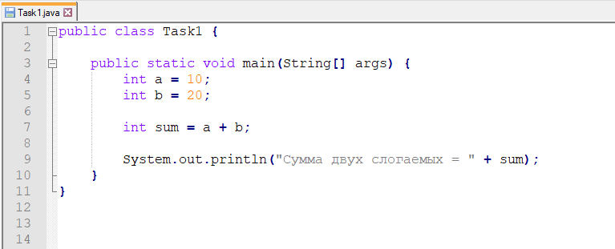
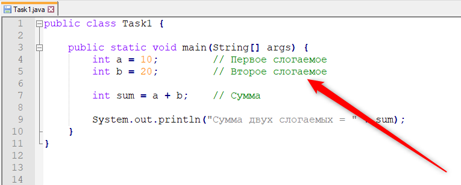
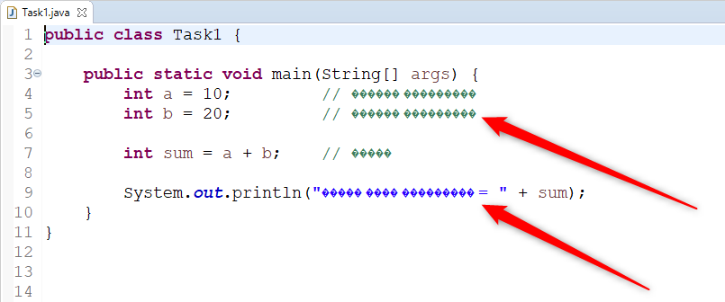
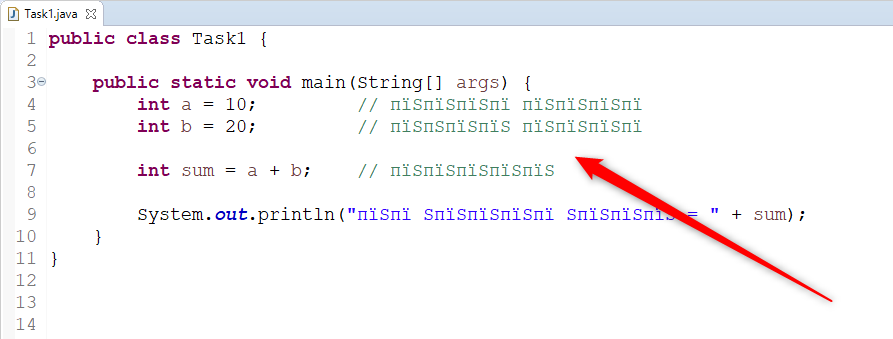
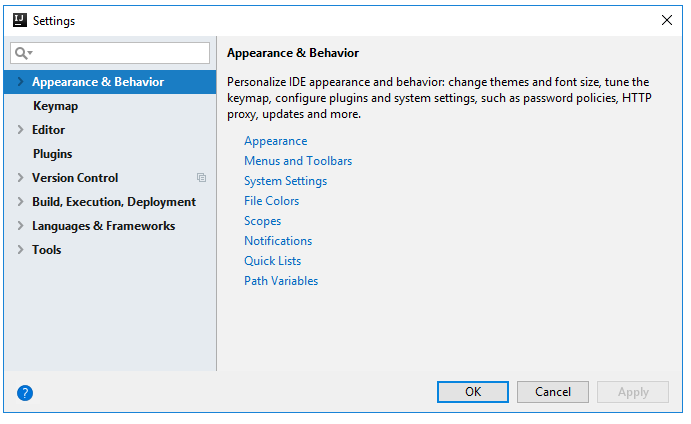
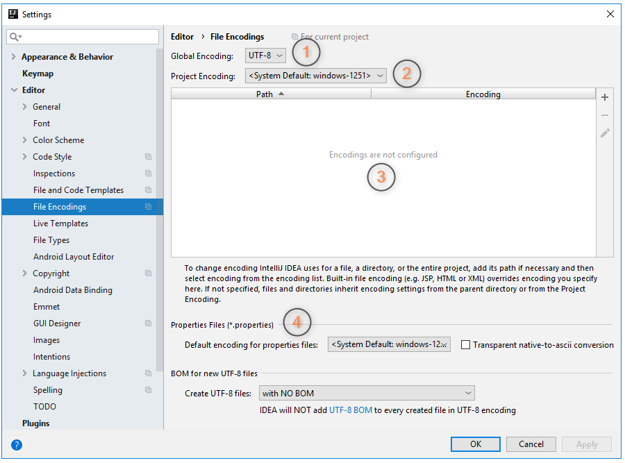

Здравствуйте, Михаил...Отправить... Собственно и все! Можно приступать ко второму (заданию или бокалу — тут надо смотреть по ситуации
 ).
).
Ну вот, наконец, создан корневой каталог приложения, создан каталог src для исходников,
zip-архиватор наготове, и вы, справедливо полагая, что больше уж ничего не сдержит вас от программирования,
приступаете к выполнению своей первой задачи.
Вы открываете свой любимый Windows Notepad (это, кстати, уже ошибка, но об этом позже) и быстро набрасываете архитектуру своей первой системы по вычислению суммы двух целых чисел. Уже через минуту экран вашего компьютера украшает вот такой код:
Вы запускаете компилятор javac — компилируется!
Вы запускаете интерпретатор java — запускается!
Вы откупориваете бутылочку Дом Периньона в честь завершения вашей первой работы — откупоривается!
Сегодня определенно — ваш день.
Сегодня у вас получается абсолютно все и вальяжно покачивая бокалом Периньона, вы тянете курсор мыши к команде
Архивировать
.
И уже в миллисекунде от щелчка мышью вас вдруг пронзает мысль:
Ну это я крутой, потому что я — автор этого кода...
А препод ведь может и не понять, что хранится в переменных
a, b и sum...
Ну и чтобы работа точно не вернулась, вы решаете добавить пояснительных комментариев. В результате код ваш становится вот таким:

Больше сомнений нет! Архивировать... Новое письмо...
Здравствуйте, Михаил...
Отправить... Собственно и все!
Можно приступать ко второму (заданию или бокалу — тут надо смотреть по ситуации
).
Однако спустя некоторое время на вашем почтовом ящике лежит неутешительный ответ —
Здравствуйте, ученик. У вас все хорошо, но работу вашу я принять не могу...
Совершенно не понимая, в чем может быть дело, вы открываете письмо...
А дело в том, что я действительно не понял... Я ничего не понял, что вы хотели написать в своих поясняющих комментариях, потому что ваш код я увидел вот таким:
Или вот таким:
Как именно будет отображаться ваш код в моем редакторе, зависит от кодировки, которую вы использовали, но это не важно. Важно в данный момент лишь то, что ваш код
Будет отображаться нечитаемыми символами, потому что ваш текстовый редактор не настроен на кодировку UTF-8!
А мой настроен .
Поэтому я и не понимаю, что именно вы хотели донести до меня. А когда я что-то не понимаю, я возвращаю ваш код на доработку.
Тут, друзья стоит еще раз повторить несколько тезисов:
char в Java имеет размер в 2 байтаНамеренно кодировать их в однобайтовых кодировках!
В этом и есть суть вашей ошибки: в мире Java, где у вас по умолчанию есть возможность корректно кодировать любые символы двумя байтами,
Вы используете редактор, который настроен на однобайтовую кодировку!
И исправление этой ошибки заключается в следующем: еще до того, как вы напишете первый символ в файле вашего исходного кода,
Вы должны перевести свой текстовый редактор в кодировку UTF-8!
И только после этого вы можете начинать программировать.
Дело в том, что если вы сначала напишете код в однобайтовой кодировке, а потом переведете редактор в UTF-8,
то все национальные символы будут перекодированы, и все равно превратятся в крокозяблы
.
Именно это я и наблюдаю в своем редакторе, когда открываю ваш однобайтовый текст. Поэтому еще раз:
Настройка кодировки в редакторе выполняется перед программированием, а не после!
Ну а чтобы вы долго не искали по интернетам, как перевести свой редактор в UTF-8, ниже приведены инструкции для наиболее популярных редакторов.
1. Как перевести Notepad++ в UTF-8?
2. Как перевести Eclipse в UTF-8?
3. Как перевести Intellij IDEA в UTF-8?
Перенеси этот раздел в упражнение. А лучше - в много маленьких упражнений.
Честно признаться, на работе я — Eclips-оид, поэтому не могу похвастаться богатым опытом использования Intellij IDEA. Перед написанием этого раздела я хотел написать просто:
Никак! Intellij IDEA уже по умолчанию настроена на UTF-8!
Однако, порывшись в ее настройках, я заметил, что это не совсем так. Оказывается, у IDEA есть два вида кодировок:
UTF-8И вот как раз кодировка текущего проекта устанавливается
В соответствии с кодировкой по умолчанию для операционной системы
То есть для ОС Windows, это снова — Cp1251.
Так же там можно настроить кодировку по умолчанию для *.properties-файлов.
И эта кодировка тоже устанавливается в соответствие с кодировкой операционной системы.
То есть для *.properties-файлов по умолчанию мы тоже получаем Cp1251.
Ну а вишенкой на этом кодировочном торте является то, что в IDEA-проекте
Разные кодировки можно указать для разных папок проекта и даже — для разных файлов!
Здесь, прежде всего, люди, которые говорят, что IDEA лучше, чем Eclipse, я полностью согласен с вами — IDEA лучше...
Но все-таки вы можете уже, наконец, ответить на один простой вопрос — чем именно она лучше?
Ну да ладно, оставим холивар по поводу лучшей IDE. Давайте заглянем в настройки IDEA. Для этого:
1. В главном меню IDEA выберите пункт File → Settings:
2. Откроется главное окно настроек Intellij IDEA:

3. Слева вы увидите дерево навигации по основным разделам настроек. Выберите в этом дереве пункт Editor → File Encodings:
4. В центральной части окна откроются настройки кодировок для вашего проекта:
Как я вам и говорил, для одного проекта вы можете задать 4 вида кодировок. На рисунке выше они пронумерованы, давайте еще раз уточним, за что отвечает настройка под каждым номером:
*.properties-файлов проекта
Ну а теперь мысли о том, что со всем этим добром делать
До сегодняшнего дня (июнь, 2019-го) я не знал о таком разнообразии кодировок в проектах IDEA. Более того, до этого же дня у меня никогда не было проблем с отображением символов национальных алфавитов в проектах, созданных в IDEA. Соответственно, первый мой вывод все еще остается прежним:
Можно ничего не делать с настройками IDEA, и все будет ОК.
С другой стороны, инстинкт должен подсказывать вам —
Если видишь, что где-нибудь в проекте можно поставить кодировку
.
Поэтому второй вывод такой:
UTF-8 — поставь!
Выберите в пунктах 1, 2 и 4 кодировку UTF-8, забудьте про пункт 3, и тогда у вас все точно будет ОК!
И самое главное, если вы собираетесь использовать Intellij IDEA в реальной работе, то есть, программировать в ней за деньги — вы должны будете досконально разобраться в вопросе:
Зачем в IDEA-проектах так много способов установить кодировку, и к чему приведут эксперименты с изменениями значений в этих четырех пунктах?
На ваш вопрос, почему я прямо сейчас не разобрался в этом досконально, я отвечу просто:
если я сейчас пойду гуглить информацию об этом вопросе,
то скорее всего уже минут через пять наткнусь на какой-нибудь доклад Тагира Валеева, который раньше не смотрел.
Запущу его, типа в фоновом режиме на соседнем мониторе — он ведь никак не помешает дописать этот текст...
И сегодня этот текст я уже не допишу .
Так что, сами, господа, все сами...
Ну а мы покидаем этот раздел. Раздел, который поставил перед нами больше вопросов, чем дал ответов, и двигаемся дальше.
4. Как перевести NetBeans в UTF-8?
Не знаю .
Прямо сейчас у меня на компьютере не стоит NetBeans.
Скорее всего, он появится у меня на компьютере... никогда.
Поэтому, если вы пользуетесь IDE NetBeans, то вам придется самим поискать информацию о том, как сменить кодировку его редактора.
Я же вас попрошу, как можно скорее сообщить мне, что вы NetBeans-пользователь,
потому что маньяков из своего близкого окружения желательно выявлять на ранних стадиях
.
5. Как перевести Windows Notepad в UTF-8?
Никак! Windows Notepad не позволяет устанавливать кодировки текстовых документов, которые вы создаете в нем.
И всегда использует кодировку Windows по умолчанию, то есть — Cp1251.
Но на ваш вопрос — Неужели ничего нельзя сделать с Windows Notepad?
— я отвечу — конечно можно!
Можно предположить, в каком примерно секторе вашего винчестера сохранен этот чудесный блокнот, и после этого —
выжечь этот сектор паяльником .
Ну что же, друзья, это все, что я хотел вам сказать о настройке кодировок в ваших редакторах исходного кода.
Давайте быстрее устанавливайте себе UTF-8, переписывайте свои комментарии
(а еще лучше — совсем их удаляйте, потому что, скорее всего они станут причиной еще одной ошибки, но это уже совсем другой разговор)
и шлите работу на повторную проверку.
Обещаю, еще 3-4 возврата, и мы доберемся, наконец, до исходного кода
Примечание-1:
Когда вы выучитесь и станете супер-классными программистами, вы можете вернуться к этой статье, и увидеть, что она насквозь пронизана ложью. Например:
И, наверное, вы найдете еще много чего неправильного в этой статье.
Но все это будет потом, когда вы станете супер-классными программистами.
А для того, чтобы в первый день своего испытательного срока на своей первой работе перевести Eclipse в UTF-8,
и тем самым услышать от Team Lead-а — Ну слава богу, хоть этот не с квадратной башкой...
—
этого лживого текста будет вполне достаточно.
Примечание-2:
На счет паяльника и винчестера — это была, типа, попытка в сарказм! Не повторяйте это на своих домашних винчестерах!